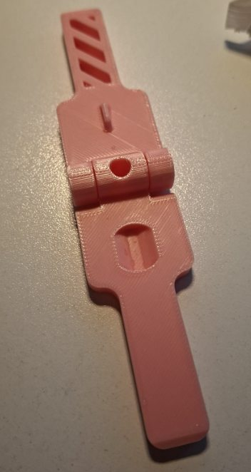
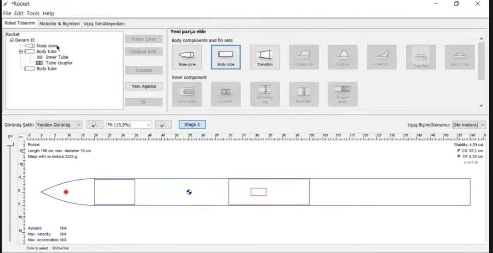

3B BASKI
İlk 3B Baskım: İlaç Kırma Aparatı
İlk 3B baskımda işlevsel bir ilaç kırma aparatı üretmeyi denedim. Parçanın menteşe yapısı, baskı katmanları ve üretim sonrası görünümü üzerinde gözlem yaptım.
Bu yıl mekanik tasarımın mantığını öğrenmeye ve ürettiğim parçaları gerçek hayatta kullanmaya başladım.
Bambu Lab yazıcısını kullanırken baskı hazırlama, parça yönü, destek yapıları ve farklı tasarımların üretilebilirliği gibi konulara odaklanıyorum.
SolidWorks'te eskiz çizimi, ölçülendirme ve basit katı modelleme konularını öğrenmeye başladım. Amacım fikirlerimi bilgisayarda çizip daha sonra üretime taşıyabilmek.
| Çalışma | Hedefim |
|---|---|
| SolidWorks | Temel 3B modeller oluşturmak |
| Bambu Lab | Modelleri baskıya hazırlamak |
Baskı yönü ve destek ayarlarının parçanın üretimini nasıl etkilediğini öğreniyorum.
Eskiz, ölçülendirme ve basit katı modeller üzerinde çalışıyorum.
Şimdilik mevcut site simgelerini kullandım; kendi baskı ve çizim fotoğraflarımı ileride ekleyeceğim.

İlk 3B baskımda işlevsel bir ilaç kırma aparatı üretmeyi denedim. Parçanın menteşe yapısı, baskı katmanları ve üretim sonrası görünümü üzerinde gözlem yaptım.

OpenRocket'te temel bir roket modeli üzerinde çalıştım. Gövde bileşenlerini tanımaya ve roket tasarımının nasıl oluşturulduğunu anlamaya başladım. Bu ekran görüntüsü tasarım denememden; uçuş sonucu değildir.